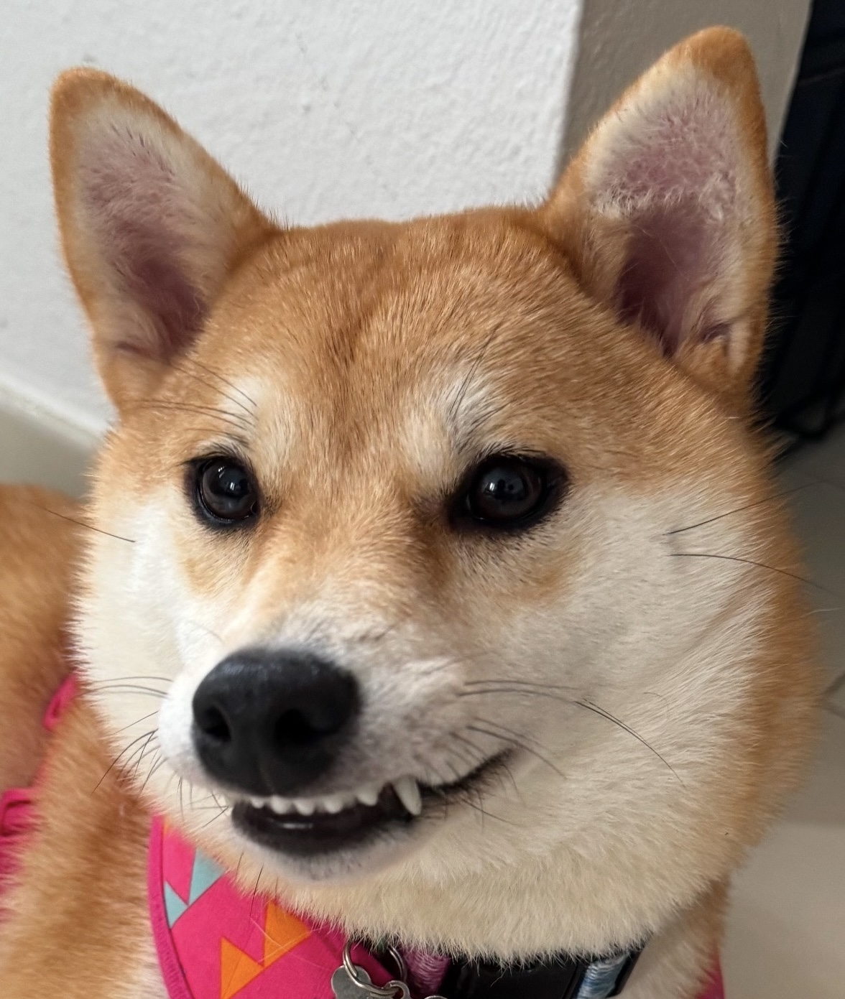

Welcome!

Hello! Since I will officially become a graduate student soon, it felt like this portfolio was long overdue. Eventually, I'll make this better as the entries come, but for now, I hope everyone who reads this is pleased with the current state of my blog page (and with Jolyne's -my spoiled Shiba- portrait). As I don't want to waste too much time, let's, without further ado, answer the question:
What will this be about?
Welp, as I want this to serve as an online resume, I will, of course, write about the making of my projects (this portfolio included!), CS-related topics, the activities I might be involved in, and some thoughts on my tech-related interests that I find useful enough to write about.
Note: The views expressed here are my own and do not represent those of any past, present, or future employer.